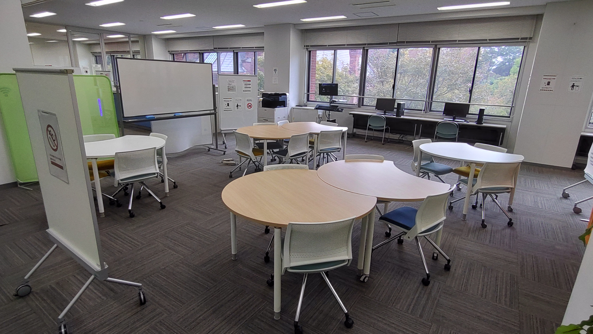
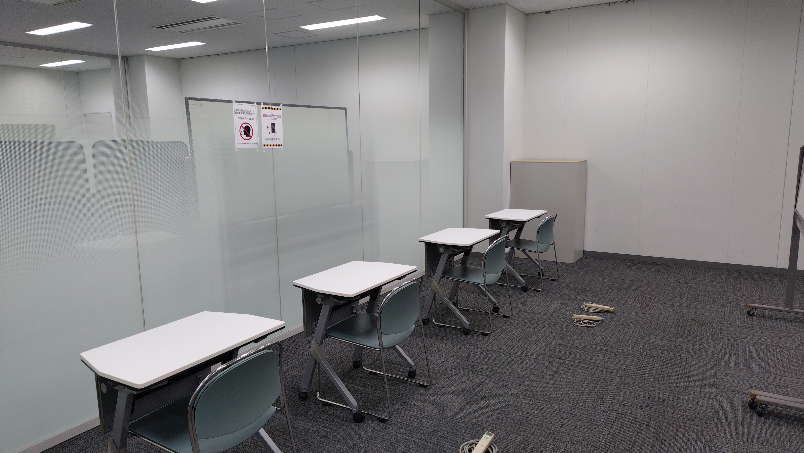
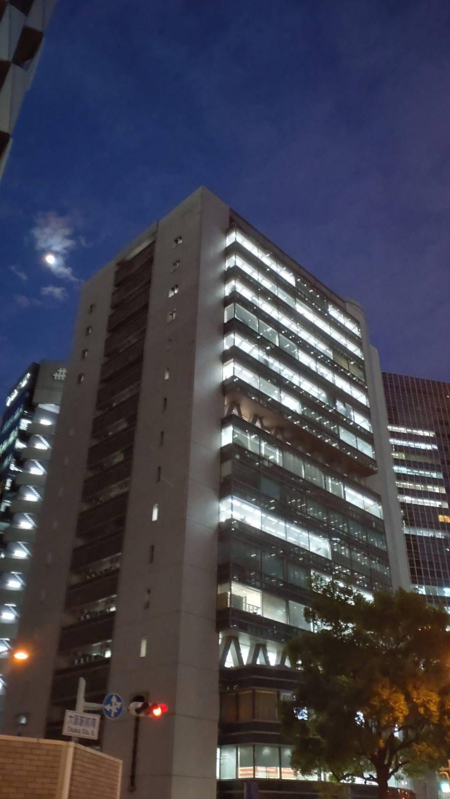
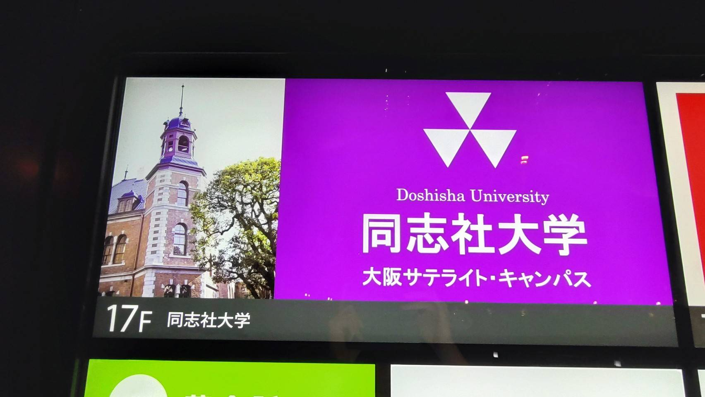

経済学部基礎科目の模試
なかなか過去問が入手できない方や，もっと問題演習をしたいという学生に向けて模試を作成しています。
担当教員によって問題の偏りがあったり試験範囲が異なったりするようですが，模試では該当するすべての範囲から
満遍なく出題しています。問題の難易度は，実際の試験問題よりもやや難しいかもしれませんが，同志社大学と同等
または上位の他大学で出題されていてもおかしくない程度に設定しています。
模試はすべて過年度に作成していますが，学部全体で大幅なカリキュラムの刷新などが無い限りは2026年度以降も
活用できると思います。もし現在1,2回生の方で，模試の出題内容といまの講義内容がまったく合っていないという
場合は，その旨をメールで伝えてくださると幸いです。
経済学部生はクエストルームを使おう！
良心館にはクエストルームという場所があるのを知っていましたか？
今出川キャンパスでは，多くの学生がラーニングコモンズあるいは空き教室で
自習していますが，どこもいっぱいでなかなか良い場所が見つかりませんよね。
しかし，クエストルームは経済学部生しか入室できず，日中も非常に空いているので
快適に利用できます。
グループで利用する場合は，グループワークエリアを予約することができるので，
友達と集まってテスト勉強をしたり，ゼミの活動に取り組むことができます。
ホワイトボードやデスクトップが利用でき，ラップトップを借りることができます。


大阪府民はサテライトキャンパスを使おう！
同志社大学は実は大阪にもキャンパスがあります。
大阪や神戸から今出川キャンパスまでは1時間半～2時間かかることも珍しくありません。
オンライン授業を視聴したり自習したりするために今出川に来るのはしんどい，
そんな実家通いの学生は大阪サテライトキャンパスがオススメです。
デスクトップが設置されている他，新聞やビジネス雑誌が閲覧でき，
特に就活で業界研究をする際に活用できます。
場所は阪神百貨店の裏側のビルで，大阪駅から徒歩3分程の距離です。



